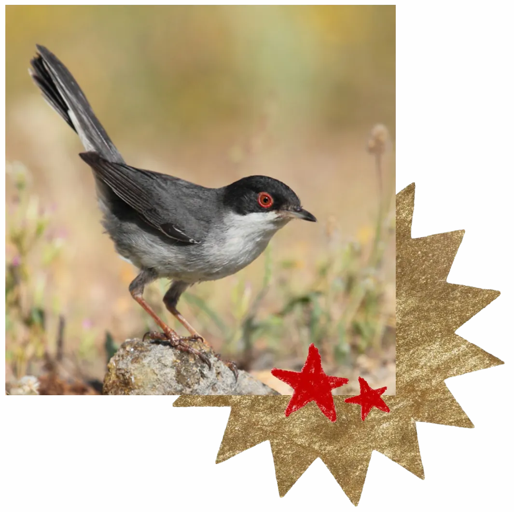
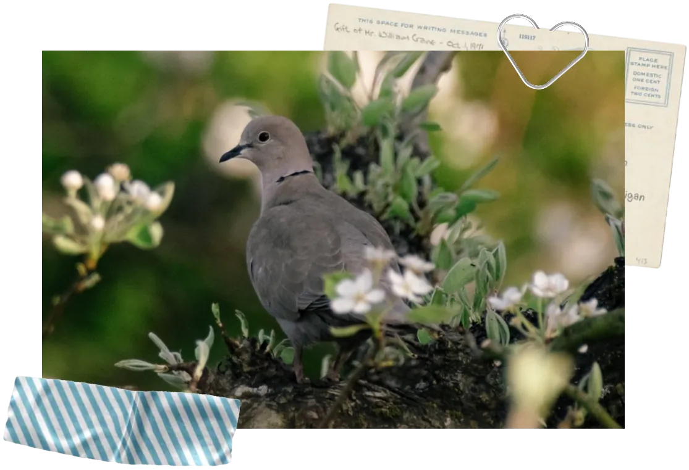
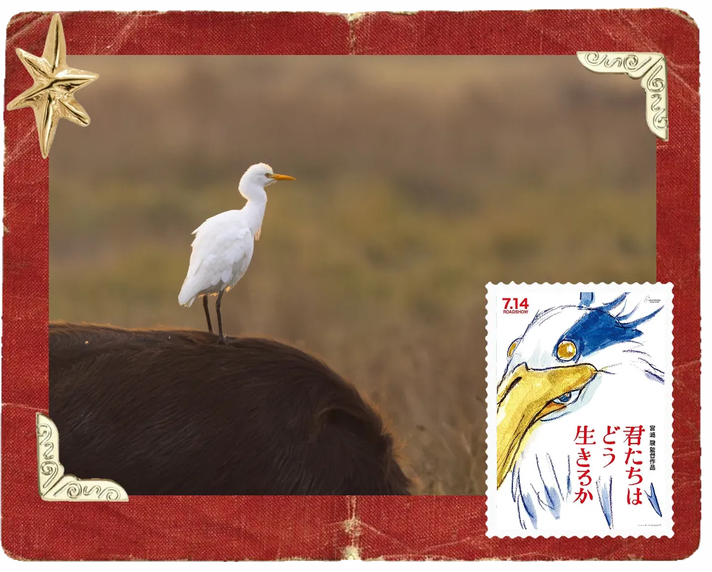
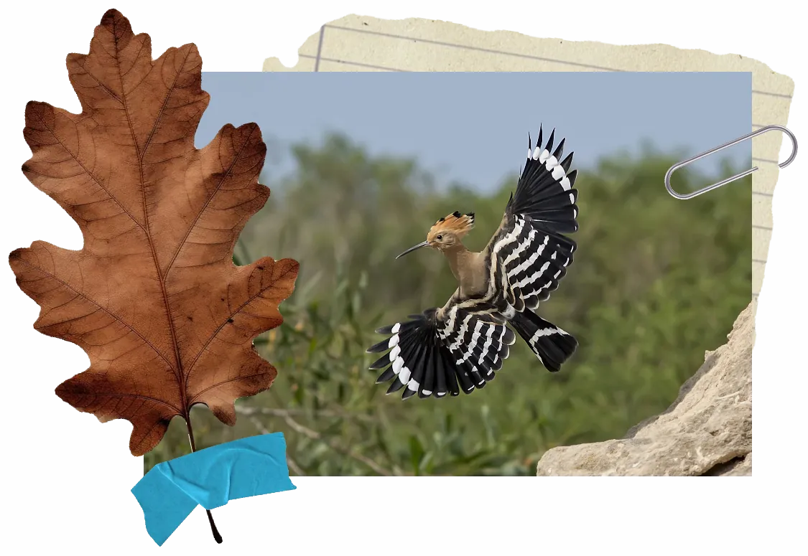

M
[osservazioni]
[pagina2]
[pagina3]
Le mie magiche osservazioni
classificate un po' come mi pare, più o meno per forma o famiglie




- marta x iNat -
[eccoli]
Ordine
Alimentazione
Habitat
Location